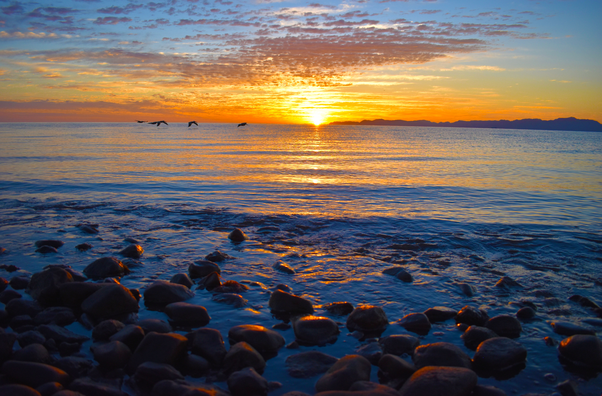
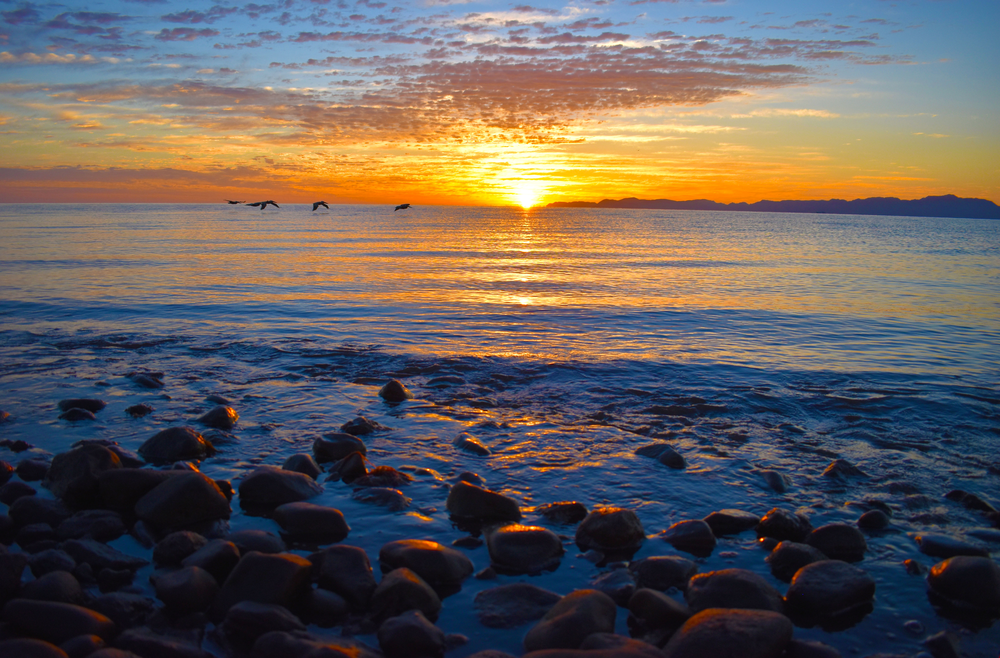
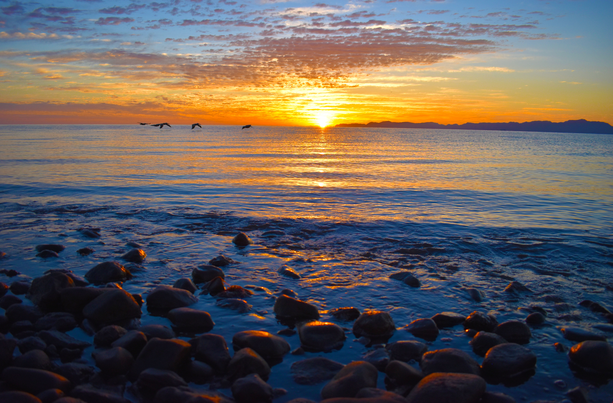

My Favourite places so far
 


Hi, my name is Magda and a few months ago I've decided to change my career and become a web developer. I’ve started learning while still working and I really liked it, so I took the decision to quit my job and study full time to be able to start looking for a developer job as soon as possible. As I love travelling, I thought that a website about travelling and my trips would be the best for my first project. As I am continuously learning and getting new ideas for improvement of the website, I will be adding to it while I progress. If you have any suggestions, are a potential employer, or if you have any tips on landing my first job as a web developer, please do get in touch. I would love to hear from you. While a full time permanent job would be ideal, I would be happy to accept any internship, apprenticeship or temporary positions that would bring me closer to landing my dream job. Thank you for your interest!

e-mail: jarkiewicz.magda@gmail.com